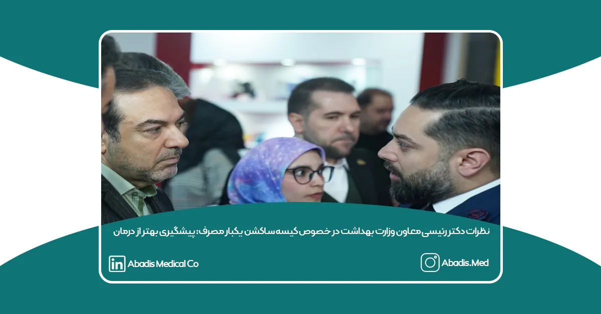

دکتر رئیسی، معاون بهداشت وزارت بهداشت، در حاشیه همایش سهروزه ایران کلین به چالشهای موجود در کنترل عفونت بیمارستانی و مصرف آنتیبیوتیکها اشاره کرد و گفت:
“بررسیها نشان میدهد یکی از دلایل مشکلات حوزه بهداشت و درمان، عدم رعایت کنترل عفونت در بیمارستانها و مصرف غیرمنطقی آنتیبیوتیکها در سطح جهان است. این مسئله منجر به افزایش مقاومت میکروبی و در نهایت، آسیب به فرآیند درمان و پیشگیری از بیماریها میشود.”
وی با تأکید بر اهمیت نقش شرکتهای دانشبنیان حوزه سلامت در حل این مشکلات افزود:
“در کنار همایش ایران کلین، نمایشگاهی اختصاصی برگزار شده که در آن شرکتهای دانشبنیان ایرانی، که عملکرد بسیار خوبی دارند، اقداماتی را در جهت کنترل عفونتهای بیمارستانی انجام دادهاند. بهجای استفاده گسترده از مواد ضدعفونیکننده، میتوان از محصولات دانشبنیان یکبارمصرف بهره برد که انتقال عفونت را کاهش میدهند و از مقاومت میکروبی ناشی از استفاده مکرر مواد ضدعفونیکننده جلوگیری میکنند.”
دکتر رئیسی در ادامه به مزایای اقتصادی این تغییر رویکرد اشاره کرد و گفت:
“در حال حاضر، بسیاری از تجهیزات بیمارستانی بهصورت دائمی استفاده و بهطور مداوم ضدعفونی میشوند. اما در طول زمان، به دلیل ایجاد مقاومت آنتیبیوتیکی و کاهش اثربخشی مواد ضدعفونیکننده، این روش هزینههای درمانی را افزایش میدهد. شرکتهای دانشبنیان با تولید تجهیزات یکبارمصرف، که پیش از این امکانپذیر نبود، توانستهاند گام بزرگی در کاهش این هزینهها بردارند.”
وی افزود:
“بررسیهای انجامشده نشان میدهد که استفاده از محصولات دانشبنیان در حوزه کنترل عفونت، از نظر هزینه اثربخشی فوقالعاده مطلوب است و میتواند در آینده میلیونها دلار در مصرف آنتیبیوتیکها و مواد ضدعفونیکننده صرفهجویی کند. این موضوع، علاوه بر بهبود کیفیت خدمات درمانی، بار اقتصادی واردشده بر نظام سلامت را کاهش میدهد.”
به گفته معاون بهداشت وزارت بهداشت، رشد سریع شرکتهای دانشبنیان در حوزه سلامت، نویدبخش آیندهای است که در آن کنترل عفونتهای بیمارستانی بهبود یافته، هزینههای نظام سلامت کاهش یافته و کیفیت مراقبتهای پزشکی ارتقا پیدا میکند.